Equation Solving¶
There are so many methods and techniques to solve an equation. Here we will review only some of them.
Ordinary Differential Equations¶
There are many important equations in physics.

Taken from Riley’s book.
The are many methods to solve an ODE,
- Green’s function.
- Series solution
- Laplace transform
- Fourier transform
Green’s Function¶
Suppose we have a differential operator  , for example can be 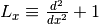. The definition of GF is
, for example can be 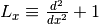. The definition of GF is

with the constrain of boundary condition of the ODE.
In most cases, GF is a stepwised function.
The application of GF to ODE follows the precedure,
Find the general form of GF for operator
;Apply BC to GF;
Continuity at
 order of derivatives at point
order of derivatives at point  , i.e.,
, i.e.,  at ;
at ;Discontinuity of the first order derivative at
, i.e.,  at point ;
at point ;Solve the coefficients to get the GF;
The solution to an inhomogeneous ODE
 is given immediately by
is given immediately by
An Example
Solve equation

{bf Green’s Function }
The operator is  with boundary condition 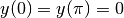 .
with boundary condition 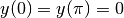 .
First step is to find the Green’s function of this operator, which is defined as the solution to

where  only operates on
only operates on  not
not  .
.
The general solutions for  is
is
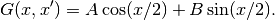
Applying the BC, we reach a step function expression for  ,
,
{bf Continuity and Discontinuity }
It is required by the equation for Green’s function that,

and
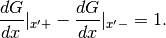
Put the expressions for Green’s function in, we can solve the coefficients,
In one line this can be written as,

The final step is to find the solution to original equaion, which is straightforward.
Series Solution¶
A second order ODE,

Wronskian of this is

where  and
and  are linearly independent solutions, i.e.,
are linearly independent solutions, i.e.,  is only satisfied when
is only satisfied when  . Wronskian is NOT zero if they are linearly independent.
. Wronskian is NOT zero if they are linearly independent.
Singularities of an ODE is are defined when  or
or  or both of them have singular points. For example, Legendre equation
or both of them have singular points. For example, Legendre equation
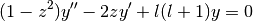
has three singular points which are  while
while  is an ordinary point.
is an ordinary point.
Solution at Ordinary Points¶
Series expansion of the solution can be as simple as

which converges in a radius  where is the distance from to the nearest singular point of our ODE.
where is the distance from to the nearest singular point of our ODE.
Solution at Regular Singular Points¶
Frobenius series of the solution

The next task is to find the indicial equation.
If the roots are not differing by an integer, we just plug the two solutions to  in and find two solutions independently.
in and find two solutions independently.
If the roots differ by an integer, on the other side, we can only plug in the larger root and find one solution. As for the second solution, we need some other techniques, such as Wronskian method and derivative method.
Wronskian method requires two expression of Wronskian, which are

and

From the first expression, we have

However, we don’t know  at this point. We should apply the second expression of Wronskian,
at this point. We should apply the second expression of Wronskian,

where the constant  can be set to 1 as one wish.
can be set to 1 as one wish.
TO DO
The derivative method is on my to do list.
Comparing With A General Form¶
For equation that take the following form,

where  , we can write down the solutions immediately,
, we can write down the solutions immediately,

in which  is the solution to Bessel equation, i.e., is one kind of Bessel function with index
is the solution to Bessel equation, i.e., is one kind of Bessel function with index  .
.
A Pendulum With A Uniformly Chaning String Length
As an example, let’s consider the case of length changing pendulum,
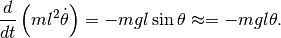
Notice that l is a function of time and
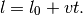
Then the equation can be rewritten as
Comparing with the general form, we have one of the possible solutions
This solution should be
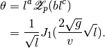


Airy Equatioin
Time-independent Schrödinger equation with a simple potential,
Comparing it with general form, we should set
So the two possible solutions are
The general solution is


Second Order Differential Equations and Gauss’ Equation¶
Gauss’ equation has the form
![z(z-1)\frac{d^2}{dz^2} u(z) + \left[(a+b+1)z -c \right] \frac{d}{dz} u(z) + a b u(z) =0,](_images/math/c17b1cabb1c0531e4428e39c1d3c1433ad413c9e.png)
which has a solution of the hypergeometric function form

The interesting this about this equation is that its Paperitz symbol is

in which the first three columns are the singularities at points  while the last column just points out that the argument of this equation is
while the last column just points out that the argument of this equation is  .
.
This means, in some sense, the solution to any equation with three singularities can be directly written down by comparing the equation with Gauss’ equation. If you care, the actual steps are changing variables, rewriting the equation into Gauss’ equation form, writing down the solutions.
Integral Equations¶
Neumann Series AKA WKB¶
For differential equation, whenever the highest derivative is multiplied by a small parameter, try this. But generally, the formalism is the following.
First of all, we use Hilbert space ![\mathscr L[a,b;w]](_images/math/95e93d6ce997954df863abab4d14a442afebc9b0.png) which means the space is defined on
which means the space is defined on ![[a,b]](_images/math/80d0383446ddd5211f03c063c1b23b120c2c6da2.png) with a weight
with a weight  , i.e.,
, i.e.,

Quantum Mechanics Books
Notice that this is very different from the notation we used in most QM books.
What is the catch? Try to write down  . It’s not that different because one can alway go back to the QM notation anyway.
. It’s not that different because one can alway go back to the QM notation anyway.
With the help of Hilbert space, one can alway write down the vector form of some operators. Suppose we have an equation

where  . So the solution is simply
. So the solution is simply

However, it’s not a solution until we find the inverse. A most general approach is the Neumann series method. We require that

where  and should be independent of .
and should be independent of .
As long as this is satisfied, the equation can be solved using Neumann series, which is an iteration method with

As an example, we can solve this equation

We define  and check the convergence condition for
and check the convergence condition for  .
.
Step one is always checking condition of convergence.
Step two is to write down the series and zeroth order. Then we reach the key point. The iteration relation is

One can write down  imediately
imediately

Keep on going.
Using Dyads in Vector Space¶
For the same example,
where , we can solve it using vector space because if operator is linear.
Suppose we have a  , the equation, in some Hilbert space, is
, the equation, in some Hilbert space, is

Multiplying through by  , we have
, we have

which reduces to a linear equation. We only need to solve out 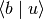 then plug it back into the original equation.